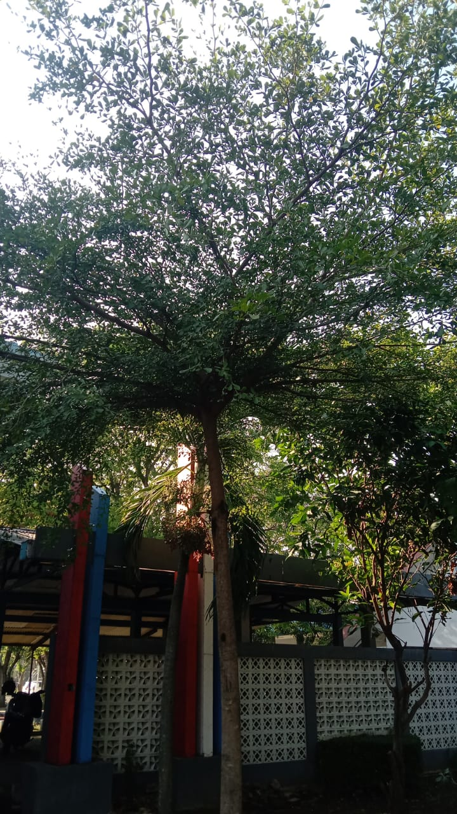

🌳 Ketapang Kencana (Terminalia mantaly)

Sejarah
Ketapang kencana (Terminalia mantaly) adalah tumbuhan endemik Madagaskar
yang kini telah diintroduksi ke berbagai daerah tropis di dunia.
Asalnya dari Madagaskar, tanaman ini telah menyebar dan digunakan sebagai tanaman peneduh
serta penghias taman karena keindahan dan bentuknya yang unik.
Ketapang kencana menjadi populer di berbagai negara tropis karena adaptasinya yang baik
dan manfaatnya dalam lansekap.
Klasifikasi Ilmiah
- Kerajaan: Plantae
- Divisi: Tracheophytes
- Ordo: Myrtales
- Famili: Combretaceae
- Genus: Terminalia
- Spesies: Terminalia mantaly
Detail Penjelasan
- Tajuk: Tajuk mendatar dan berlapis-lapis membuatnya populer sebagai tanaman peneduh. Bentuknya yang unik memberi nilai estetika tinggi.
- Pohon: Berwujud pohon tropis dengan kemampuan adaptasi yang baik terhadap berbagai kondisi lingkungan.
Manfaat
- Tanaman Peneduh: Tajuknya yang luas membuatnya ideal untuk memberikan keteduhan di taman atau area publik.
- Penghias Taman: Sering dipakai sebagai tanaman penghias taman rumah dan kebun karena bentuk tajuknya yang menarik.
Sumber Informasi